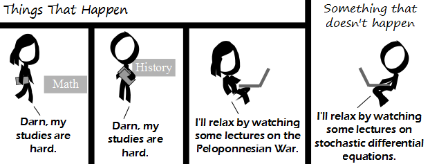

Comic JK 911
When I Feel Like It
⇤
<
?
>
⇥

⇤
<
?
>
⇥
Forum
.
RSS
.
Digg
.
Facebook
.
Reddit
.
Twitter
.
Stumbleupon
Enter your thoughts on number 911 here. Please, no spamming, trolling, phreaking, or finding the Peloponnesian War relaxing. I'll relax by phoning your mother for some fun! So that's what caused 911! >curiously, no-one commented on the fact that in this cartoon, the random maths student... is apparently a girl... are ComicJK readers especially enlightened ( of course ), or just assumed the character was a boy with long hair... ? >>We were too distracted insulting reddit and/or other majors. >>>so much for "especially enlightened"... signed Emmy Noether... I'm a reddit major, I relax by deleting text in anonymous textboxes. So gratifying! > I relax by typing fucking offensive comments in anonymous textboxes and laughing when you cry and throw tantrums and delete them in an emotional fit. >> delete delete delete Japanese major, relax by listening to chanting of the Heike Oh, math... Funny thing, I relax by doing projectEuler.net somethings. >+1 >>+/-1 >>>++ >>>>e(i*tau)=1 >>>>>Using e as a function? Stupid programmers and their i'm-feeling-lucky polymorphism. >>>>>>haha google reference I'll relax by watching some porn. >Unlike what is shown in the comic, this is what actually happens. >>Yes. >>>+1 >>>>+1 Does *anyone* relax by watching lectures on stochastic differential equations? >No. Doing stochastic differential equations? I know at least one person. Watching lectures about them? Nobody. >>I do. Puts me right to sleep. >>>The reverse is more fun. Doing the Peloponnesian War? I know at least one person. Watching lectures about it? Nobody. >>>>does reading Thucydides count... ? >>>>>Khan academy before bed You know, I was one of the members of the old Forum, but I haven't used the new reddit one partly because I don't have a reddit account and I'm not really inclined to actually get one. >Ummm...getting a reddit account takes 10 seconds at most. They don't even require email validation... >>Learn to reply properly you moron. No, and it's morAn. >>>"morAn" ? you appeared in "Black Books" and "Sean Of The Dead" ? I like reddit because there are usernames in there. An anonymous textbox is great, but when users become identifiable they really start knowing each other AND DELETING TEXT. > Reddit is crap. >> Yes. Sorry to be the X in "there is at least one X such ...", but I'm a historian by training, and currently Physics undergrad, and yes, I do think of Physics/Math lectures as "chilling out", at least sometimes. (Contrary to stereotypes, understanding mostly arbitrary stuff like history & humanities in general is _way_ harder than understanding math & hard sciences in general, bacause math and hard science are a body of knowledge built with clear, objective methods: humanities are laden with ad hoc, arbitrary, confusing concepts. Many times, ideology and politics dictate adherence to theory, instead of the other way around. So yes, it is refreshing and relaxing to accompany some proof which "only" requires my reason, and not all other brain parts) > that just means it's memorizing a bunch of information that no one has been able to successfully understand in the first place (though some will claim to have) >> Memorizing is a big part of the humanities, yes, just like number-crunching is a big part of the hard sciences. But we should not reduce either to their "mechanical" techniques. IMHO, one of the important differences between them is that one is expressed through formal languages and the other is not. This informality of the humanities limits the rigour with which you can conduce an investigation, yes, but it also allows much more room for imagination. >>> Number-crunching is why we invented computers. (inb4: linear algebra, go fuck yourself with a chainsword) >>>> They help with the memorization part too! Also, maybe puzzles etc count as relaxing while doing math. >>LOL JK I SO WOULD DO THAT